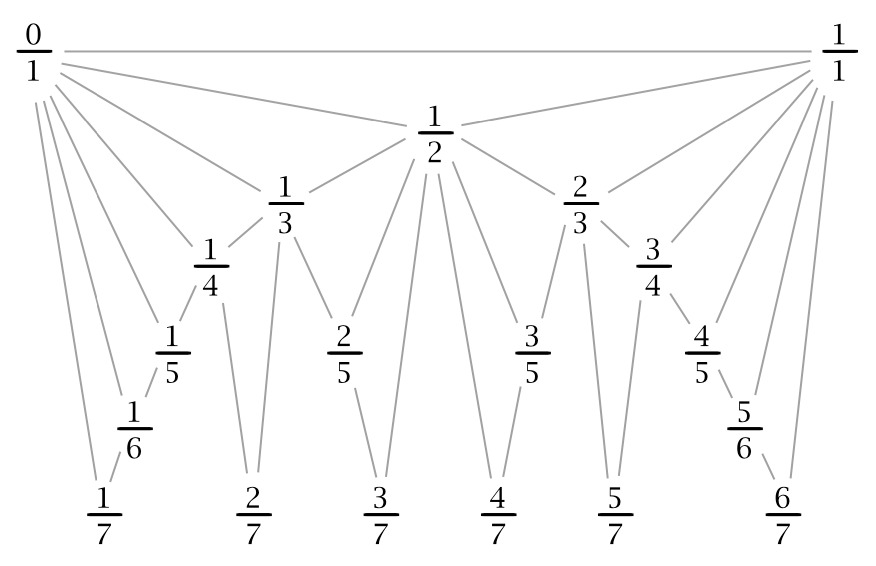

<h1 id="introdução">Introdução</h1>
<p>Este artigo foi inspirado pelo Problema 6 da Olimpíada Brasileira de
Matemática (OBM) e da Olimpíada Brasileira de Matemática Universitária
(OBMU) de 2024. Durante a pesquisa por materiais de referência em
português sobre as sequências de Farey, tornou-se evidente a escassez de
artigos ou publicações que tratassem do tema de forma acessível e
aprofundada. A maioria do conhecimento disponível está restrita a
artigos e livros em inglês, limitando o acesso a estudantes e
entusiastas da matemática sem fluência nesse idioma.</p>
<p>Com isso, este artigo pretende preencher essa lacuna, reunindo
resultados e conceitos de diversas fontes em inglês e organizando-os de
forma clara e didática. O objetivo principal é fornecer um material útil
tanto para matemáticos amadores curiosos quanto para estudantes
avançados envolvidos em olimpíadas de matemática. As sequências de Farey
são um tópico rico em propriedades e padrões interessantes, com
aplicações que transcendem a teoria dos números, alcançando áreas como
geometria e aproximação de números irracionais. Espero que este material
inspire o interesse e expanda o horizonte matemático de todos os que
explorarem estas páginas.</p>
<h1 id="a-história-peculiar-das-sequências-de-farey">A História Peculiar
das Sequências de Farey</h1>
<p>A história das sequências de Farey é marcada por uma curiosa
reviravolta, envolvendo um geólogo, um matemático renomado e um
matemático menos conhecido. A sequência leva o nome de John Farey, um
geólogo inglês que, em 1816, publicou um artigo intitulado “On a curious
property of vulgar fractions” na revista Philosophical Magazine. Neste
artigo, Farey observou um padrão interessante nas frações entre 0 e 1,
organizadas em ordem crescente e com denominadores limitados por um
determinado valor. Ele descreveu como construir a sequência, listou os
termos da sequência de ordem 5 como exemplo e questionou se a
propriedade já havia sido observada ou demonstrada anteriormente.</p>
<p>Um dos leitores do artigo de Farey foi ninguém menos que
Augustin-Louis Cauchy, um dos matemáticos mais proeminentes da época.
Cauchy, impressionado pela observação de Farey, forneceu uma
demonstração rigorosa da propriedade no mesmo ano. A partir de então, a
sequência passou a ser conhecida como “sequência de Farey”, consolidando
o nome de Farey na história da matemática.</p>
<p>A ironia, porém, é que Farey não foi o primeiro a descobrir as
propriedades da sequência. Charles Haros, um matemático menos conhecido,
já havia, em 1802, identificado a propriedade e até mesmo explicado como
construir a 99<sup><u>a</u></sup> sequência. Infelizmente para Haros,
seu trabalho não recebeu o reconhecimento devido na época, e ele acabou
sendo ofuscado pela publicação de Farey.</p>
<p>O caso das sequências de Farey ilustra como a história da matemática,
assim como outras áreas do conhecimento, pode ser permeada por acasos e
injustiças. Farey, apesar de sua contribuição modesta, acabou
imortalizado por uma descoberta que não era originalmente sua. Em <em>A
Mathematician’s Apology</em>, G. H. Hardy comenta ironicamente: “...
Farey é imortal porque não conseguiu entender um teorema que Haros havia
provado perfeitamente quatorze anos antes...”.</p>
<p>Apesar da controvérsia em torno da autoria das descobertas sobre suas
propriedades, as sequências de Farey passaram a ser estudadas na teoria
dos números, com diversas aplicações, incluindo a aproximação racional
de números irracionais e contribuições importantes à geometria.</p>
<h1 id="construção-das-sequências-de-farey">Construção das Sequências de
Farey</h1>
<p>Em todos os resultados, demonstrações e soluções daqui em diante,
assumiremos que as frações estão em sua forma irredutível, salvo
indicação em contrário. Existem diversas formas de introduzirmos as
sequências de Farey, desde uma definição pragmática até a construção de
diagramas onde os andares nos dão a respectiva sequência de ordem <span
class="math inline">\(n\)</span>.</p>
<p>Para fins didáticos, iniciemos com o algoritmo para a construção, que
nos levará a um diagrama, e por fim chegaremos à definição limpa e
direta. Começamos com a sequência de ordem 1, representada por: <span
class="math display">\[F_1 = \left\{ \frac{0}{1}, \frac{1}{1}
\right\}.\]</span></p>
<p>Para construir a sequência de ordem <span
class="math inline">\(n\)</span>, denotada por <span
class="math inline">\(F_n\)</span>, a partir da sequência de ordem <span
class="math inline">\(n-1\)</span>, denotada por <span
class="math inline">\(F_{n-1}\)</span>, siga os seguintes passos de
forma detalhada:</p>
<ol>
<li><p><strong>Inicialize a nova sequência:</strong></p>
<ul>
<li><p>Comece copiando todos os elementos da sequência <span
class="math inline">\(F_{n-1}\)</span> para uma nova sequência, que
chamaremos de <span class="math inline">\(F_n\)</span>. Assim, a nova
sequência <span class="math inline">\(F_n\)</span> inicialmente é uma
cópia de <span class="math inline">\(F_{n-1}\)</span>.</p></li>
</ul></li>
<li><p><strong>Calcule e insira as mediantes:</strong></p>
<ul>
<li><p>Para cada par de frações consecutivas <span
class="math inline">\(\frac{a}{b}\)</span> e <span
class="math inline">\(\frac{a&#39;}{b&#39;}\)</span> em <span
class="math inline">\(F_{n-1}\)</span>, calcule a fração mediante entre
elas, dada pela fórmula: <span class="math display">\[\text{Mediante} =
\frac{a + a&#39;}{b + b&#39;}.\]</span></p></li>
<li><p>A fração mediante é obtida somando os numeradores e os
denominadores das frações consecutivas.</p></li>
</ul></li>
<li><p><strong>Verifique a condição do denominador:</strong></p>
<ul>
<li><p>Após calcular a fração mediante <span
class="math inline">\(\frac{a + a&#39;}{b + b&#39;}\)</span>, verifique
se o denominador resultante, <span class="math inline">\(b +
b&#39;\)</span>, é menor ou igual a <span
class="math inline">\(n\)</span>. Isto é importante, pois queremos
limitar o tamanho do denominador para garantir que a sequência <span
class="math inline">\(F_n\)</span> respeite a ordem definida.</p></li>
<li><p>Se a condição <span class="math inline">\(b + b&#39; \leq
n\)</span> for satisfeita, então a fração mediante deve ser inserida
entre <span class="math inline">\(\frac{a}{b}\)</span> e <span
class="math inline">\(\frac{a&#39;}{b&#39;}\)</span> na sequência <span
class="math inline">\(F_n\)</span>.</p></li>
<li><p>Caso contrário, se <span class="math inline">\(b + b&#39; &gt;
n\)</span>, a fração mediante não é adicionada, e seguimos para o
próximo par de frações consecutivas em <span
class="math inline">\(F_{n-1}\)</span>.</p></li>
</ul></li>
<li><p><strong>Concluindo a construção da sequência:</strong></p>
<ul>
<li><p>Repita o processo para todos os pares consecutivos de frações em
<span class="math inline">\(F_{n-1}\)</span>. Ao final, a sequência
<span class="math inline">\(F_n\)</span> estará completa, contendo tanto
as frações da sequência anterior quanto as novas frações mediantes que
foram inseridas, respeitando o limite do denominador.</p></li>
</ul></li>
</ol>
<p>De forma geral, esse processo pode ser resumido no diagrama a
seguir:</p>
<figure>

</figure>
<p>Finalmente, uma definição direta da sequência de Farey de ordem <span
class="math inline">\(n\)</span>:</p>
<div class="definition*">
<p><strong>Definição 1</strong>. A <em>sequência de Farey de ordem <span
class="math inline">\(n\)</span></em>, denotada por <span
class="math inline">\(F_n\)</span>, é o conjunto de frações racionais
<span class="math inline">\(\frac{r}{s}\)</span>, onde <span
class="math inline">\(0 \leq r \leq s \leq n\)</span>, com <span
class="math inline">\(\text{mdc}(r, s) = 1\)</span>, dispostas em ordem
crescente, incluindo os extremos <span class="math inline">\(0 =
\frac{0}{1}\)</span> e <span class="math inline">\(1 =
\frac{n}{n}\)</span>.</p>
</div>
<p>Cabe observar que cada elemento da sequência de Farey é uma fração
irredutível cujo denominador é menor ou igual a <span
class="math inline">\(n\)</span>. Além disso, a sequência <span
class="math inline">\(F_n\)</span> contém todas as frações que podem ser
formadas nesse intervalo, de modo que frações consecutivas satisfazem a
condição de estarem na menor forma e ordenadas de maneira crescente.</p>
<h1 id="propriedades-básicas">Propriedades básicas</h1>
<p>Nesta seção, começamos explorando a relação fundamental entre frações
consecutivas, descrita pelo Teorema da Vizinhança de Farey (TVF). Este
teorema nos fornece uma condição necessária e suficiente para que duas
frações sejam vizinhas em uma sequência de Farey de ordem n. Tal
critério é extremamente útil, pois permite identificar quais frações são
mais próximas em termos de aproximação racional e também serve como base
para outros resultados.</p>
<div class="theorem*">
<p><strong>Teorema 1</strong> (da Vizinhança de Farey). <em>As frações
<span class="math inline">\(\frac{a}{b} &lt; \frac{c}{d}\)</span> são
consecutivas na sequência de Farey <span
class="math inline">\(F_n\)</span> se, e somente se, <span
class="math inline">\(bc - ad = 1\)</span> e <span
class="math inline">\(b+d\geq n+1\)</span>.</em></p>
</div>
<div class="proof">
<p><em>Proof.</em> Como <span
class="math inline">\(\operatorname{mdc}(a, b) = 1\)</span>, a equação
linear <span class="math inline">\(bx - ay = 1\)</span> tem uma solução
<span class="math inline">\(x = x_0\)</span>, <span
class="math inline">\(y = y_0\)</span>. Além disso, <span
class="math inline">\(x = x_0 + at\)</span>, <span
class="math inline">\(y = y_0 + bt\)</span> também será uma solução para
qualquer inteiro <span class="math inline">\(t\)</span>. Escolha <span
class="math inline">\(t = t_0\)</span> de forma que <span
class="math display">\[\begin{aligned}
0 \leq n - b &lt; y_0 + bt_0 \leq n,
\end{aligned}\]</span> e defina <span class="math inline">\(x = x_0 +
bt_0\)</span>, <span class="math inline">\(y = y_0 + bt_0\)</span>. Como
<span class="math inline">\(y \leq n\)</span>, <span
class="math inline">\(\frac{x}{y}\)</span> será uma fração em <span
class="math inline">\(F_n\)</span>. Além disso, <span
class="math display">\[\frac{x}{y} = \frac{a}{b} + \frac{1}{by} &gt;
\frac{a}{b},\]</span> de modo que <span
class="math inline">\(\frac{x}{y}\)</span> aparece depois na sequência
de Farey do que <span class="math inline">\(\frac{a}{b}\)</span>. Se
<span class="math inline">\(\frac{x}{y} \neq \frac{c}{d}\)</span>, então
<span class="math inline">\(\frac{x}{y} &gt; \frac{c}{d}\)</span> e
obtemos <span class="math display">\[\begin{aligned}
\frac{x}{y} - \frac{c}{d} = \frac{dx - cy}{dy} \geq \frac{1}{dy},
\end{aligned}\]</span> bem como <span
class="math display">\[\begin{aligned}
\frac{c}{d} - \frac{a}{b} = \frac{bc - ad}{bd} \geq \frac{1}{bd}.
\end{aligned}\]</span> Somando as duas desigualdades, obtemos <span
class="math display">\[\begin{aligned}
\frac{x}{y} - \frac{a}{b} \geq \frac{1}{dy} + \frac{1}{bd} = \frac{b +
y}{bdy}.
\end{aligned}\]</span> Mas <span class="math inline">\(b + y &gt;
n\)</span> (lembre que <span class="math inline">\(n - b &lt;
y\)</span>) e <span class="math inline">\(d \leq n\)</span>, resultando
na contradição <span class="math display">\[\begin{aligned}
\frac{1}{by} = \frac{bx - ay}{by} = \frac{x}{y} - \frac{a}{b} = \frac{b
+ y}{bdy} &gt; \frac{n}{bdy} \geq \frac{1}{by}.
\end{aligned}\]</span> Assim, <span class="math inline">\(\frac{x}{y} =
\frac{c}{d}\)</span> e a equação <span class="math inline">\(bx - ay =
1\)</span> torna-se <span class="math inline">\(bc - ad =
1\)</span>. ◻</p>
</div>
<p>Daqui em diante, sempre que nos referirmos a frações que são termos
consecutivos de uma sequência de Farey, usaremos o termo <em>vizinhas de
Farey</em> para nos referirmos às mesmas.</p>
<p>O corolário a seguir, que nomearemos de Corolário da Mediante, revela
uma característica interessante sobre frações consecutivas: a fração
intermediária entre duas vizinhas de Farey é obtida através da soma dos
numeradores e denominadores, resultando na chamada fração mediante. Esse
corolário reforça a ideia de simetria e estrutura nas sequências de
Farey, mostrando que frações mediantes surgem naturalmente e estão
posicionadas entre as frações originais, conforme esperado.</p>
<div class="corollary*">
<p><strong>Corolário 1</strong> (da Mediante). <em>Se <span
class="math inline">\(\frac{a}{b}&lt;\frac{a&#39;}{b&#39;}&lt;\frac{a&#39;&#39;}{b&#39;&#39;}\)</span>
são vizinhas de Farey contidas em <span
class="math inline">\(F_n\)</span>, então <span
class="math display">\[\frac{a&#39;}{b&#39;}=\frac{a+a&#39;&#39;}{b+b&#39;&#39;}.\]</span></em></p>
</div>
<div class="proof">
<p><em>Proof.</em> Aplicando o TVF aos pares adjacentes:</p>
<p>1) Para <span class="math inline">\(\dfrac{a}{b}\)</span> e <span
class="math inline">\(\dfrac{a&#39;}{b&#39;}\)</span>:</p>
<p><span class="math display">\[b&#39;a - ba&#39; = 1. \quad
(1)\]</span></p>
<p>2) Para <span class="math inline">\(\dfrac{a&#39;}{b&#39;}\)</span> e
<span
class="math inline">\(\dfrac{a&#39;&#39;}{b&#39;&#39;}\)</span>:</p>
<p><span class="math display">\[b&#39;&#39;a&#39; - b&#39;a&#39;&#39; =
1. \quad (2)\]</span></p>
<p>Subtraindo a equação (1) da equação (2):</p>
<p><span class="math display">\[(b&#39;&#39;a&#39; - b&#39;a&#39;&#39;)
- (b&#39;a - ba&#39;) = 1 - 1,\]</span></p>
<p><span class="math display">\[(b&#39;&#39;a&#39; - b&#39;a&#39;&#39;)
- (b&#39;a - ba&#39;) = 0.\]</span></p>
<p>Simplificando:</p>
<p><span class="math display">\[b&#39;&#39;a&#39; - b&#39;a&#39;&#39; -
b&#39;a + ba&#39; = 0,\]</span></p>
<p><span class="math display">\[a&#39;(b&#39;&#39; + b) -
b&#39;(a&#39;&#39; + a) = 0.\]</span></p>
<p>Reorganizando:</p>
<p><span class="math display">\[a&#39;(b + b&#39;&#39;) = b&#39;(a +
a&#39;&#39;).\]</span></p>
<p>Assim, obtemos:</p>
<p><span class="math display">\[\dfrac{a&#39;}{b&#39;} = \dfrac{a +
a&#39;&#39;}{b + b&#39;&#39;}.\qedhere\]</span> ◻</p>
</div>
<p>Vale notar que uma das consequências importantes do TVF foi
estabelecer uma cota mínima para a soma dos denominadores de duas
frações vizinhas, cota essa que se verifica ser a melhor possível. Uma
pergunta natural que emerge é: será que para três frações vizinhas
também existe uma cota mínima para a soma de seus denominadores? A
resposta é afirmativa. Por ora, apresentaremos uma cota mínima menos
refinada, reservando para a seção de Problemas Olímpicos a demonstração
da melhor cota possível (que apareceu como problema 6 na OBM de
2024!).</p>
<div class="corollary*">
<p><strong>Corolário 2</strong> (da Cota Mínima). <em>Se <span
class="math inline">\(\frac{a}{b}&lt;\frac{a&#39;}{b&#39;}&lt;\frac{a&#39;&#39;}{b&#39;&#39;}\)</span>
são frações vizinhas de Farey contidas em <span
class="math inline">\(F_n\)</span>, então <span
class="math display">\[b+b&#39;+b&#39;&#39;\geq \left\lceil
\frac{4(n+1)}{3} \right\rceil.\]</span></em></p>
</div>
<div class="proof">
<p><em>Proof.</em> Do corolário anterior, sabemos que <span
class="math inline">\(\dfrac{a&#39;}{b&#39;} = \dfrac{a + a&#39;&#39;}{b
+ b&#39;&#39;}\)</span>. Seja então <span
class="math inline">\(d=(a+a&#39;&#39;,b+b&#39;&#39;)\)</span>. Logo o
TVF nos dá que: <span
class="math display">\[b+\frac{b+b&#39;&#39;}{d}\geq n+1\quad \text{ e }
\quad b&#39;&#39;+\frac{b+b&#39;&#39;}{d}\geq n+1,\]</span> donde
obtemos que <span class="math display">\[\begin{aligned}
\left(b+\frac{b+b^{\prime \prime}}{d}\right)+\left(b^{\prime
\prime}+\frac{b+b^{\prime \prime}}{d}\right) &amp; \geqslant 2(n+1) \\
\Rightarrow \quad b+b^{\prime \prime} &amp; \geqslant \frac{2
d(n+1)}{d+2}.
\end{aligned}\]</span> Assim, vale que <span
class="math display">\[\begin{aligned}
b+b^{\prime}+b^{\prime \prime} &amp; =b+b^{\prime
\prime}+\frac{b+b^{\prime \prime}}{d} \\
&amp; =\left(b+b^{\prime \prime}\right) \frac{(d+1)}{d} \\
&amp; \geqslant \frac{2 d}{d+2} \cdot(n+1) \frac{(d+1)}{d} \\
&amp; =2(n+1) \frac{(d+1)}{d+2}\\
&amp;\geq 2(n+1) \frac{2}{3}.
\end{aligned}\]</span></p>
<p>Segue o resultado. ◻</p>
</div>
<p>Como próximo resultado, temos o que chamaremos de Corolário da
Aproximação, pois ele quantifica a diferença entre a mediante de duas
frações e cada uma destas. Essa estimativa não apenas caracteriza a
aproximação entre frações, mas também demonstra como as mediantes são
eficientes em dividir o espaço racional de maneira equilibrada. Este
resultado, além de sua importância teórica, possui implicações práticas
em problemas de aproximação racional de números reais.</p>
<div class="corollary*">
<p><strong>Corolário 3</strong> (da Aproximação). <em>Se <span
class="math inline">\(\frac{a}{b}\)</span> e <span
class="math inline">\(\frac{a&#39;}{b&#39;}\)</span> são vizinhas de
Farey contidas em <span class="math inline">\(F_n\)</span>, então <span
class="math display">\[\left| \frac{a}{b} - \frac{a + a&#39;}{b +
b&#39;} \right| = \frac{1}{b(b + b&#39;)} \leq \frac{1}{b(n +
1)},\]</span> e <span class="math display">\[\left|
\frac{a&#39;}{b&#39;} - \frac{a + a&#39;}{b + b&#39;} \right| =
\frac{1}{b&#39;(b + b&#39;)} \leq \frac{1}{b&#39;(n +
1)}.\]</span></em></p>
</div>
<div class="proof">
<p><em>Proof.</em> Usando o TVF, sabemos que: <span
class="math display">\[\begin{aligned}
\left| \frac{a}{b} - \frac{a + a&#39;}{b + b&#39;} \right| &amp;=
\frac{|a(b + b&#39;) - b(a + a&#39;)|}{b(b + b&#39;)} \\
&amp;= \frac{|ab + ab&#39; - ab - ba&#39;|}{b(b + b&#39;)} =
\frac{1}{b(b + b&#39;)}.
\end{aligned}\]</span> Então, como sabemos que <span
class="math inline">\(b + b&#39; \geq n + 1\)</span>, podemos substituir
<span class="math display">\[\left| \frac{a}{b} - \frac{a + a&#39;}{b +
b&#39;} \right| = \frac{1}{b(b + b&#39;)} \leq \frac{1}{b(n +
1)}.\]</span></p>
<p>Basta repetir esses passos para provar que a segunda desigualdade
também é verdadeira. ◻</p>
</div>
<p>O resultado a seguir mostra que, se tomarmos frações vizinhas em uma
metade da sequência, há uma correspondência direta com frações na outra
metade, formando um espelho perfeito. Essa propriedade é fundamental
para compreender a estrutura palíndroma das sequências de Farey, uma
característica que será explorada mais a fundo posteriormente.</p>
<div class="corollary*">
<p><strong>Corolário 4</strong> (das Vizinhas Espelhadas). <em>Se <span
class="math inline">\(\frac{0}{1} \leq
\ldots&lt;\frac{\mathrm{a}_{1}}{\mathrm{~b}_{1}}&lt;\frac{\mathrm{a}_{2}}{\mathrm{~b}_{2}}&lt;\ldots
\leq \frac{1}{2}\)</span> são frações vizinhas na sequência de Farey,
então <span class="math inline">\(\frac{1}{2} \leq
\ldots&lt;\frac{\mathrm{b}_{2}-\mathrm{a}_{2}}{\mathrm{~b}_{2}}&lt;\frac{\mathrm{b}_{1}-\mathrm{a}_{1}}{\mathrm{~b}_{1}}&lt;\ldots
\leq \frac{1}{1}\)</span> também são frações vizinhas.</em></p>
</div>
<div class="proof">
<p><em>Proof.</em> Usando o <em>TVF</em> nas primeiras frações
consecutivas dadas, temos <span class="math inline">\(b_{1} a_{2} -
a_{1} b_{2} = 1\)</span>. Portanto, <span
class="math inline">\(b_{2}\left(b_{1} - a_{1}\right) - b_{1}\left(b_{2}
- a_{2}\right) = b_{1} a_{2} - a_{1} b_{2} = 1\)</span>. O restante é
imediato. ◻</p>
</div>
<p>Por fim, o Lema da Quantidade de Termos (LQT). Ele nos fornece uma
fórmula recursiva para determinar quantos termos existem em uma
sequência de Farey de ordem <span class="math inline">\(n\)</span>. Essa
relação recursiva depende da função Totiente de Euler, <span
class="math inline">\(\varphi(n)\)</span>, indicando que a quantidade de
termos adicionados de uma ordem para outra está relacionada aos inteiros
coprimos a <span class="math inline">\(n\)</span>. Esse resultado também
serve de ponto de partida para deduzir outras propriedades, como a
fórmula fechada para a quantidade de termos.</p>
<div class="lemma*">
<p><strong>Lema 1</strong> (da Quantidade de Termos). <em>A quantidade
de termos da sequência de Farey <span
class="math inline">\(F_{n}\)</span> é dada pela seguinte fórmula
recursiva:</em></p>
<p><em><span
class="math display">\[\left|\mathrm{F}_{n}\right|=\left|\mathrm{F}_{n-1}\right|+\varphi(n)
.\]</span></em></p>
</div>
<div class="proof">
<p><em>Proof.</em> É imediato do processo de construção de <span
class="math inline">\(F_n\)</span>. ◻</p>
</div>
<p>Observe que o LQT revela que a quantidade de elementos novos em <span
class="math inline">\(F_{n}\)</span>, em comparação com <span
class="math inline">\(F_{n-1}\)</span>, é dada por <span
class="math inline">\(\varphi(n)\)</span>. Os valores inteiros <span
class="math inline">\(1 \leq k &lt; n\)</span> que são coprimos com
<span class="math inline">\(n\)</span> aparecem no numerador dos novos
membros de <span class="math inline">\(\mathrm{F}_{n}\)</span>, com o
denominador de cada novo termo em <span
class="math inline">\(\mathrm{F}_{n}\)</span> sendo sempre igual a <span
class="math inline">\(n\)</span>. Assim, uma rápida contagem nos leva
a</p>
<p><span class="math display">\[\left|F_n\right| = 1 + \sum_{k=1}^{n}
\varphi(k).\]</span></p>
<p>Por outro lado, do seguinte resultado bem conhecido <span
class="math display">\[\lim _{n \rightarrow \infty} \frac{\sum_{k=1}^{n}
\varphi(k)}{n^2}=\frac{3}{\pi^2},\]</span> resulta que <span
class="math display">\[\lim _{n \rightarrow \infty}
\frac{\left|F_n\right|-1}{n^2}=\frac{3}{\pi^2}.\]</span></p>
<h1 id="propriedades-especiais">Propriedades Especiais</h1>
<p>Embora os resultados presentes nesta seção também sejam propriedades
das sequências de Farey, eles são menos conhecidos, mas não menos belos
e importantes. Para começar, temos o:</p>
<div class="theorem*">
<p><strong>Teorema 2</strong>. <em>Na sequência de Farey <span
class="math inline">\(F_{n}\)</span>, a soma dos elementos no
denominador é duas vezes a soma dos elementos no numerador para todo
inteiro positivo <span class="math inline">\(n\)</span>.</em></p>
</div>
<div class="proof">
<p><em>Proof.</em> Um lema que será útil nesta demonstração é o:</p>
<p><strong>Lema</strong> (Auxiliar)<strong>.</strong> Para todos os
inteiros <span class="math inline">\(n \geq 0\)</span> e <span
class="math inline">\(k \geq 0\)</span>, <span
class="math display">\[\sum_{\operatorname{mdc}(k, n)=1} k=\frac{n
\varphi(n)}{2}.\]</span></p>
<p><em>Demonstração do Lema.</em> Se <span
class="math inline">\(\operatorname{mdc}(n, k)=1\)</span>, então <span
class="math inline">\(\operatorname{mdc}(n, n-k)=1\)</span>. Note que
<span class="math inline">\(k\)</span> não pode ser igual a <span
class="math inline">\(n-k\)</span>, pois, caso contrário, <span
class="math inline">\(\operatorname{mdc}(n, n)\)</span> não seria <span
class="math inline">\(1\)</span>. O número de elementos coprimos com
<span class="math inline">\(n\)</span> é <span
class="math inline">\(\varphi(n)\)</span>. Assim, ao parear <span
class="math inline">\(k\)</span> e <span
class="math inline">\(n-k\)</span>, obtemos que a soma total é <span
class="math inline">\(\frac{n \varphi(n)}{2}\)</span> 0◻</p>
<p>Usamos indução para provar resultado principal:</p>
<p>Seja <span class="math inline">\(N_{n}\)</span> a soma dos elementos
no numerador da <span class="math inline">\(n\)</span>-ésima sequência
de Farey <span class="math inline">\(F_{n}\)</span> e <span
class="math inline">\(D_{n}\)</span> a soma dos elementos no denominador
da <span class="math inline">\(n\)</span>-ésima sequência de Farey. Para
<span class="math inline">\(n=1, N_{1}=1\)</span> e <span
class="math inline">\(\mathrm{D}_{1}=2\)</span>, o que nos dá que <span
class="math inline">\(D_{1}=2 N_{1}\)</span>. Agora assumimos que o
resultado vale para <span class="math inline">\(n-1\)</span>. Provemos
que o resultado vale para <span class="math inline">\(n\)</span>: <span
class="math display">\[\begin{aligned}
N_{n} &amp;= N_{n-1} + \sum_{\operatorname{mdc}(n, k) = 1} k \quad
\text{\footnotesize (usando o \textit{LQT})} \\
&amp;= N_{n-1} + \frac{n \varphi(n)}{2}, \quad \text{\footnotesize
(usando o Lema Auxiliar)} \\[10pt]
\end{aligned}\]</span> e também <span
class="math display">\[\begin{aligned}
\mathrm{D}_{n} &amp;= D_{n-1} + n \varphi(n) \quad \text{\footnotesize
(usando o \textit{LQT})} \\
&amp;= 2 N_{n-1} + n \varphi(n) \quad \text{\footnotesize (usando a
hipótese de indução)} \\
&amp;= 2 \left( N_{n-1} + \frac{n \varphi(n)}{2} \right) \\
&amp;= 2 N_{n}.
\end{aligned}\]</span> Assim, pelo Princípio da Indução Finita, o
resultado segue. ◻</p>
</div>
<p>Um resultado interessantíssimo sobre a estrutura dos denominadores em
uma sequência de Farey é que eles formam uma sequência palindrômica.
Antes, cabe a:</p>
<div class="definition*">
<p><strong>Definição 2</strong>. Uma palavra ou sequência é chamada de
<em>palíndroma</em> se sua leitura é idêntica tanto da esquerda para a
direita quanto da direita para a esquerda. Palíndromos surgem em várias
áreas, incluindo linguística, matemática e música. Exemplos incluem as
palavras “ANA”, “OSSO” e “RADAR”, bem como os números “101”, “1001” e
“12321”.</p>
</div>
<p>Com isso, podemos enunciar o:</p>
<div class="theorem*">
<p><strong>Teorema 3</strong>. <em>Os denominadores de cada fração em
<span class="math inline">\(F_{n}\)</span> para todo <span
class="math inline">\(n\)</span> na sequência de Farey formam uma
sequência palíndroma.</em></p>
</div>
<div class="proof">
<p><em>Proof.</em> Provamos este teorema por indução. Em <span
class="math inline">\(F_{1}\)</span>, os denominadores são <span
class="math inline">\(1, 1\)</span>, o que constitui uma sequência
palíndroma. Em <span class="math inline">\(F_{2}\)</span>, os
denominadores são <span class="math inline">\(1, 2, 1\)</span>, o que
também constitui uma sequência palíndroma. Agora, suponha que os
denominadores em <span class="math inline">\(F_{n-1}\)</span> estejam em
uma sequência palíndroma. Precisamos mostrar que os denominadores em
<span class="math inline">\(F_{n}\)</span> também estão em uma sequência
palíndroma. Usando o <em>Corolário das Vizinhas Espelhadas</em> e a
estrutura palíndroma dos denominadores em <span
class="math inline">\(F_{n-1}\)</span>, podemos escrever <span
class="math inline">\(F_{n-1}\)</span> na seguinte forma:</p>
<p><span class="math display">\[F_{n-1} = \left\{ \frac{0}{1}, \ldots,
\frac{r_{1}}{s_{1}}, \frac{r_{2}}{s_{2}}, \ldots, \frac{1}{2}, \ldots,
\frac{s_{2} - r_{2}}{s_{2}}, \frac{s_{1} - r_{1}}{s_{1}}, \ldots,
\frac{1}{1} \right\}\]</span></p>
<p>Suponha que, na próxima sequência <span
class="math inline">\(F_{n}\)</span>, um novo termo apareça entre <span
class="math inline">\(\frac{r_{1}}{s_{1}}\)</span> e <span
class="math inline">\(\frac{r_{2}}{s_{2}}\)</span>. Seja <span
class="math inline">\(r_{1} + r_{2} = k\)</span>. Temos as seguintes
relações, usando o TVF: <span class="math inline">\(s_{1} + s_{2} =
n\)</span> e <span class="math inline">\(\operatorname{mdc}(n, k) =
1\)</span>. Agora, <span class="math inline">\((s_{1} - r_{1}) + (s_{2}
- r_{2}) = n - k\)</span>.<br />
Assim, podemos escrever <span class="math inline">\(F_{n}\)</span> em
termos de <span class="math inline">\(n\)</span> e <span
class="math inline">\(k\)</span> da seguinte forma:</p>
<p><span class="math display">\[\begin{gathered}
F_{n} = \left\{ \frac{0}{1}, \ldots, \frac{r_{1}}{s_{1}}, \frac{k}{n},
\frac{r_{2}}{s_{2}}, \ldots, \frac{1}{2}, \ldots, \frac{s_{2} -
r_{2}}{s_{2}}, \right. \\
\left. \frac{n - k}{n}, \frac{s_{1} - r_{1}}{s_{1}}, \ldots, \frac{1}{1}
\right\}
\end{gathered}\]</span> Como <span
class="math inline">\(\frac{r_{1}}{s_{1}} &lt; \frac{k}{n} &lt;
\frac{r_{2}}{s_{2}}\)</span> são vizinhos, temos:</p>
<p><span class="math display">\[k s_{1} - n r_{1} = 1 \quad \text{e}
\quad n r_{2} - k s_{2} = 1.\]</span></p>
<p>Note que,</p>
<p><span class="math display">\[n(s_{1} - r_{1}) - (n - k)s_{1} = k
s_{1} - n r_{1} = 1,\]</span> <span class="math display">\[(n - k)s_{2}
- n(s_{2} - r_{2}) = n r_{2} - k s_{2} = 1.\]</span></p>
<p>Portanto, <span class="math inline">\(\frac{s_{2} - r_{2}}{s_{2}}
&lt; \frac{n - k}{n} &lt; \frac{s_{1} - r_{1}}{s_{1}}\)</span> são
vizinhos também. Assim, provamos que os denominadores em <span
class="math inline">\(F_{n}\)</span> formam uma sequência palíndroma. O
resultado desejado segue por indução. ◻</p>
</div>
<p><strong>Observação.</strong> Por comprimento de um palíndromo,
entendemos o número de elementos que aparecem nele.</p>
<h1 id="aplicações">Aplicações</h1>
<p>A teoria das sequências de Farey possui diversas aplicações
interessantes, especialmente no contexto da aproximação de números reais
por frações racionais. Devido às suas propriedades de estrutura e
ordenação, as sequências de Farey permitem encontrar aproximações
racionais precisas, utilizando denominadores relativamente pequenos. A
seguir, apresentamos uma série de resultados que ilustram como as
sequências de Farey podem ser aplicadas na resolução de problemas de
aproximação racional.</p>
<p>O primeiro teorema desta seção trata da aproximação de um número real
<span class="math inline">\(x\)</span> por uma fração cujo denominador
está limitado a um valor específico. Esse resultado é particularmente
útil para encontrar boas aproximações racionais com um denominador
pré-definido, destacando o papel importante das mediantes no processo de
aproximação eficiente de valores reais. Essa abordagem é essencial em
contextos onde a simplicidade e praticidade da fração são preferíveis,
como na computação numérica e na aritmética prática.</p>
<div class="theorem*">
<p><strong>Teorema 4</strong>. <em>Se <span
class="math inline">\(x\)</span> é um número real e <span
class="math inline">\(n\)</span> é um inteiro positivo, então podemos
encontrar inteiros <span class="math inline">\(a\)</span> e <span
class="math inline">\(b\)</span> relativamente primos, tal que <span
class="math inline">\(0 &lt; b \leq n\)</span> e <span
class="math display">\[\left| x - \frac{a}{b} \right| \leq \frac{1}{b(n
+ 1)}.\]</span></em></p>
</div>
<div class="proof">
<p><em>Proof.</em> Recorde o <em>Corolário da Aproximação</em>, que
afirma <span class="math display">\[\left| \frac{a}{b} - \frac{a + c}{b
+ d} \right| = \frac{1}{b(b + d)} \leq \frac{1}{b(n + 1)}.\]</span></p>
<p>Agora, suponha que um número real <span
class="math inline">\(x\)</span> esteja entre as frações <span
class="math inline">\(\frac{a}{b}\)</span> e <span
class="math inline">\(\frac{a + c}{b + d}\)</span>. Então, novamente
pelo <em>Corolário da Aproximação</em>, <span
class="math display">\[\left| x - \frac{a}{b} \right| \leq \left|
\frac{a}{b} - \frac{a + c}{b + d} \right| \leq \frac{1}{b(n +
1)}.\qedhere\]</span> ◻</p>
</div>
<p>Após esse teorema, estendemos o conceito ao caso dos números
irracionais. O objetivo aqui é provar que é sempre possível aproximar um
número irracional com a precisão desejada utilizando frações
racionais.</p>
<div class="theorem*">
<p><strong>Teorema 5</strong>. <em>Se <span
class="math inline">\(\xi\)</span> é um número real e irracional, então
existem infinitas frações <span
class="math inline">\(\frac{a}{b}\)</span> tais que <span
class="math display">\[\left| \xi - \frac{a}{b} \right| &lt;
\frac{1}{b^2}.\]</span></em></p>
</div>
<div class="proof">
<p><em>Proof.</em> Para qualquer inteiro <span class="math inline">\(n
&gt; 0\)</span>, podemos encontrar <span
class="math inline">\(a_n\)</span> e <span
class="math inline">\(b_n\)</span> usando o Teorema anterior, onde <span
class="math inline">\(0 &lt; b_n \leq n\)</span> e <span
class="math display">\[\left| \xi - \frac{a_n}{b_n} \right| &lt;
\frac{1}{b_n(n + 1)}.\]</span></p>
<p>Agora, vamos supor, por meio de uma contradição, que há apenas um
número finito de valores distintos. Se isso fosse verdade, então
existiria um valor <span class="math inline">\(k\)</span> tal que <span
class="math display">\[\left| \frac{a_n}{b_n} \right| \geq \left|
\frac{a_k}{b_k} \right|\]</span> para todo <span class="math inline">\(n
&gt; 0\)</span>. Isso implica que <span class="math display">\[\left|
\xi - \frac{a_n}{b_n} \right| \geq \left| \xi - \frac{a_k}{b_k}
\right|.\]</span></p>
<p>Como <span class="math inline">\(\xi\)</span> é irracional, sabemos
que <span class="math display">\[\left| \xi - \frac{a_k}{b_k} \right|
&gt; 0.\]</span></p>
<p>Isso significa que podemos encontrar um <span
class="math inline">\(n\)</span> suficientemente grande tal que <span
class="math display">\[\frac{1}{n + 1} &gt; \left| \xi - \frac{a_k}{b_k}
\right|.\]</span></p>
<p>Isso leva à contradição: <span class="math display">\[\left| \xi -
\frac{a_k}{b_k} \right| \leq \left| \xi - \frac{a_n}{b_n} \right| \leq
\frac{1}{b(n+1)} \leq \frac{1}{n+1} &lt; \left| \xi - \frac{a_k}{b_k}
\right|.\qedhere\]</span> ◻</p>
</div>
<p>Em seguida, apresentamos o famoso Teorema de Hurwitz, que também faz
uso das sequências de Farey para garantir a existência de aproximações
racionais precisas para números irracionais. O Teorema de Hurwitz vai
além ao garantir que, para qualquer número irracional, existem infinitas
frações que aproximam este número com um erro menor do que uma
constante, que depende do quadrado do denominador.</p>
<div class="theorem*">
<p><strong>Teorema 6</strong> (Hurwitz). <em>Dado um número irracional
<span class="math inline">\(\xi\)</span>, existem infinitos números
racionais <span class="math inline">\(\frac{h}{k}\)</span> tais que
<span class="math display">\[\left| \xi - \frac{h}{k} \right| &lt;
\frac{1}{\sqrt{5}k^2}.\]</span></em></p>
</div>
<div class="proof">
<p><em>Proof.</em> Suponha que <span class="math inline">\(\xi \in
(0,1)\)</span>. Mostraremos que, se <span
class="math inline">\(\frac{a}{b} &lt; \xi &lt; \frac{c}{d}\)</span>
para duas frações consecutivas de Farey de <span
class="math inline">\(F_n\)</span>, então uma das três frações <span
class="math display">\[\frac{a}{b}, \frac{c}{d}, \frac{e}{f}\]</span>
satisfaz a desigualdade, onde <span
class="math inline">\(\frac{e}{f}\)</span> é igual à mediante <span
class="math inline">\(\frac{a+c}{b+d}\)</span>.</p>
<p>Observe que, ao aproximarmos <span class="math inline">\(\xi\)</span>
entre as frações de Farey de <span class="math inline">\(F_n\)</span>,
podemos simplesmente continuar aumentando <span
class="math inline">\(n\)</span>, o que nos dá infinitas frações que
satisfazem a desigualdade. Agora provaremos a desigualdade por
contradição.</p>
<p>Suponha que nenhuma das três frações satisfaça a desigualdade. Isso
significa que <span class="math display">\[\xi - \frac{a}{b} \geq
\frac{1}{\sqrt{5}b^2}, \quad \xi - \frac{e}{f} \geq
\frac{1}{\sqrt{5}f^2}, \quad \frac{c}{d} - \xi \geq
\frac{1}{\sqrt{5}d^2}.\]</span></p>
<p>Note que estamos assumindo que <span
class="math inline">\(\xi\)</span> está entre <span
class="math inline">\(\frac{e}{f}\)</span> e <span
class="math inline">\(\frac{c}{d}\)</span>, o explica os sinais na
última inequação devido ao uso de valores absolutos. Também observe que
igualdades podem ocorrer.</p>
<p>Agora, se somarmos a primeira e a terceira desigualdades, e a segunda
e a terceira desigualdades, ficamos com as duas desigualdades <span
class="math display">\[\frac{c}{d} - \frac{a}{b} \geq \frac{1}{\sqrt{5}}
\left( \frac{1}{b^2} + \frac{1}{d^2} \right), \quad \frac{c}{d} -
\frac{e}{f} \geq \frac{1}{\sqrt{5}} \left( \frac{1}{f^2} + \frac{1}{d^2}
\right).\]</span></p>
<p>Observe que <span class="math display">\[\frac{c}{d} - \frac{a}{b} =
\frac{bc - ad}{bd} = \frac{1}{bd}, \quad \frac{c}{d} - \frac{e}{f} =
\frac{cf - de}{df} = \frac{1}{df}.\]</span></p>
<p>Assim, restam as duas desigualdades <span
class="math display">\[\frac{1}{bd} \geq \frac{1}{\sqrt{5}} \left(
\frac{1}{b^2} + \frac{1}{d^2} \right), \quad \frac{1}{df} \geq
\frac{1}{\sqrt{5}} \left( \frac{1}{f^2} + \frac{1}{d^2}
\right).\]</span></p>
<p>Se multiplicarmos a primeira desigualdade por <span
class="math inline">\(\sqrt{5}b^2d^2\)</span> e a segunda por <span
class="math inline">\(\sqrt{5}d^2f^2\)</span>, e então somarmos os
resultados, obtemos <span class="math display">\[\begin{aligned}
d\sqrt{5}(b + f) &amp;= d\sqrt{5}(2b + d) \\
&amp;\geq b^2 + 2d^2 + f^2 \\
&amp;= 2b^2 + 3d^2 + 2bd,
\end{aligned}\]</span> o que é equivalente a <span
class="math display">\[0 \geq \frac{1}{2} ((\sqrt{5} - 1)d -
2b)^2.\]</span></p>
<p>Isso implica que <span class="math inline">\((\sqrt{5} - 1)d - 2b =
0\)</span>, o que nos leva a <span class="math display">\[\sqrt{5} = 1 -
\frac{2b}{d}.\]</span></p>
<p>Isso significa que <span class="math inline">\(\frac{2b}{d}\)</span>
é um número irracional, o que é uma contradição. Assim, o Teorema de
Hurwitz foi provado. ◻</p>
</div>
<h1 id="problemas-olímpicos">Problemas Olímpicos</h1>
<p>Agora, vamos colocar a teoria em prática, resolvendo alguns problemas
olímpicos.<br />
<strong>Problema 1.</strong> Em uma formação regular de <span
class="math inline">\(n \times n\)</span>, há <span
class="math inline">\(n^2\)</span> estudantes dispostos em uma grade.
Dois estudantes podem ver um ao outro se a linha direta de visão entre
eles não estiver obstruída por outro estudante. Em outras palavras, se
três estudantes estão colineares, o estudante do meio bloqueia a linha
de visão entre os outros dois. Quantos estudantes o estudante localizado
no canto inferior esquerdo da grade pode ver?</p>
<p><strong>Solução.</strong> Coloquemos coordenadas nos estudantes, de
forma que aquele no canto inferior esquerdo seja o ponto <span
class="math inline">\((0,0)\)</span>. Assim, a quantidade de estudantes
que o estudante na posição <span class="math inline">\((0,0)\)</span>
enxerga acima da diagonal <span class="math inline">\(y = x\)</span> é
equivalente ao número de frações irredutíveis na sequência de Farey
<span class="math inline">\(F_{n-1}\)</span>.</p>
<p>Ao restringirmos apenas aos pontos <span class="math inline">\((x,
y)\)</span> com <span class="math inline">\(x \leq y\)</span>, estamos
contando o número de frações irredutíveis entre <span
class="math inline">\(0\)</span> e <span
class="math inline">\(1\)</span> com denominador no máximo <span
class="math inline">\(n-1\)</span>. A resposta final é, então, <span
class="math inline">\(2|F_{n-1}| - 1\)</span>, onde <span
class="math inline">\(|F_n|\)</span> representa o número de termos na
sequência de Farey de ordem <span class="math inline">\(n\)</span>.
0◻<br />
<strong>Problema 2.</strong> Sejam <span
class="math inline">\(P\)</span> e <span
class="math inline">\(Q\)</span> polinômios inteiros. Suponha que, para
todos os inteiros <span class="math inline">\(a\)</span> e <span
class="math inline">\(b\)</span>, <span class="math inline">\(aP +
bQ\)</span> possui uma raiz inteira. Então <span
class="math inline">\(P\)</span> e <span
class="math inline">\(Q\)</span> possuem uma raiz inteira em comum.</p>
<p><strong>Solução.</strong> Suponha que <span
class="math inline">\(P\)</span> e <span
class="math inline">\(Q\)</span> não têm raízes inteiras em comum. Vamos
demonstrar que isso leva a uma contradição. Da suposição que <span
class="math inline">\(P\)</span> e <span
class="math inline">\(Q\)</span> não têm raízes inteiras em comum, temos
que <span class="math inline">\((P(n),Q(n))\neq (0,0)\)</span>. Para
cada <span class="math inline">\(n\in\mathbb{N}\)</span>, a aplicação
linear <span
class="math inline">\(T_n:\mathbb{R}^2\to\mathbb{R}\)</span> dada por
<span class="math inline">\(T(x,y)=xP(n)+yQ(n)\)</span> é sobrejetiva e
seu kernel é um subespaço de dimensão 1 que passa pela origem. Em outras
palavras, o kernel de <span class="math inline">\(T_n\)</span>, que
chamaremos de <span class="math inline">\(R_n\)</span>, é uma reta que
passa pela origem e com coeficiente angular racional. Seja <span
class="math display">\[\mathbb{Z}_n^2/{\sim} = \{[(a,b)] : (a,b) \in
\mathbb{Z}^2, 0 &lt; |a|, |b| \leq n\},\]</span> onde <span
class="math inline">\([(a,b)] = \{(c,d) \in \mathbb{Z}^2 : bd =
ac\}\)</span>. Defina a função</p>
<p><span class="math display">\[\begin{aligned}
A:\mathbb{Z}_n^2/{\sim} &amp;\to R=\{R_n;n\in\mathbb{Z}\} \\
A([(a,b)]) &amp;= R_k, \text{ onde } (a,b)\in R_k.
\end{aligned}\]</span></p>
<p>Como para todo <span
class="math inline">\((a,b)\in\mathbb{Z}^2\)</span> existe <span
class="math inline">\(k\)</span> inteiro tal que <span
class="math inline">\(aP(k)+bQ(k)=0\)</span>, então <span
class="math inline">\(A\)</span> está bem definida. É imediato também
que <span class="math inline">\(A\)</span> é injetiva. Se <span
class="math inline">\(aP(k)+bQ(k)=0\)</span>, então, pelo Critério de
Pesquisa de Raízes Racionais, temos <span class="math display">\[k\leq
\mid aP(0)+bQ(0)\mid\leq 2n\cdot\text{máx}\{\mid P(0)\mid,\mid
Q(0)\mid\}\]</span></p>
<p>Logo, usando o Problema 1, concluímos que</p>
<p><span class="math display">\[2(2\mid F_N\mid-1)\leq 2n\cdot
\text{máx}\{\mid P(0)\mid,\mid Q(0)\mid\},\]</span></p>
<p>um absurdo, já que <span class="math inline">\(\lim _{n \rightarrow
\infty} \frac{\left|F_n\right|}{n^2}=\frac{3}{\pi^2}\)</span>. Segue o
resultado.0◻</p>
<p><strong>Problema 3.</strong> A sequência de Fibonacci é definida como
<span class="math inline">\(f_1 = f_2 = 1\)</span>, <span
class="math inline">\(f_{n+2} = f_{n+1} + f_n\)</span> <span
class="math inline">\((n \in \mathbb{N})\)</span>. Suponha que <span
class="math inline">\(a\)</span> e <span
class="math inline">\(b\)</span> são inteiros positivos tais que <span
class="math inline">\(\frac{a}{b}\)</span> está entre as duas frações
<span class="math inline">\(\frac{f_n}{f_{n-1}}\)</span> e <span
class="math inline">\(\frac{f_{n+1}}{f_n}\)</span>. Mostre que <span
class="math inline">\(b \geq f_{n+1}\)</span>.</p>
<p><strong>Solução.</strong> De fato, podemos usar a mesma estratégia da
prova do TVF para mostrar que, se <span class="math inline">\(|ad - bc|
= 1\)</span>, para cada fração <span
class="math inline">\(\frac{p}{q}\)</span> que está entre <span
class="math inline">\(\frac{a}{b}\)</span> e <span
class="math inline">\(\frac{c}{d}\)</span>, temos que <span
class="math inline">\(q\)</span> é maior ou igual a <span
class="math inline">\(b + d\)</span>.</p>
<p>Tome <span class="math inline">\(\frac{a}{b} &lt; \frac{p}{q} &lt;
\frac{c}{d}\)</span> e <span class="math inline">\(ad - bc =
-1\)</span>. Então, <span class="math inline">\(\frac{p}{q} -
\frac{a}{b} \geq \frac{1}{bq}\)</span> e <span
class="math inline">\(\frac{c}{d} - \frac{p}{q} \geq
\frac{1}{dq}\)</span> (pois <span class="math inline">\(pb &gt;
aq\)</span> e <span class="math inline">\(cq &gt; pd\)</span>).
Somando-as, temos <span class="math display">\[\frac{c}{d} - \frac{a}{b}
\geq \frac{1}{bq} + \frac{d}{q}.\]</span> Como <span
class="math inline">\(\frac{c}{d} - \frac{a}{b} = \frac{1}{bd}\)</span>,
temos <span class="math inline">\(\frac{1}{bd} \geq \frac{b +
d}{bdq}\)</span>. Assim, obtemos <span class="math inline">\(q \geq b +
d\)</span>.</p>
<p>Neste caso, <span class="math inline">\(|f_n^2 - f_{n-1} f_{n+1}| =
1\)</span>. Logo, para qualquer <span
class="math inline">\(\frac{p}{q}\)</span> entre <span
class="math inline">\(\frac{f_{n+1}}{f_n}\)</span> e <span
class="math inline">\(\frac{f_n}{f_{n-1}}\)</span>, temos <span
class="math inline">\(q \geq f_n + f_{n-1} = f_{n+1}\)</span>.0◻<br />
<strong>Problema 4</strong> Existe um conjunto de esferas <span
class="math inline">\(\mathcal{S}\)</span>, duas a duas disjuntas, tal
que para cada ponto <span class="math inline">\(P \in
\mathbb{Q}^2\)</span> existe uma esfera <span class="math inline">\(s
\in \mathcal{S}\)</span> tangente ao plano no ponto <span
class="math inline">\(P\)</span>?</p>
<p><strong>Solução.</strong> Sim, existe tal conjunto de esferas. Vamos
construir explicitamente esse conjunto de esferas disjuntas, associando
a cada ponto <span class="math inline">\(P \in \mathbb{Q}^2\)</span> uma
esfera tangente ao plano no ponto <span
class="math inline">\(P\)</span>.</p>
<p>Começamos considerando as sequências de Farey <span
class="math inline">\(F_n\)</span>. Definimos então <span
class="math inline">\(F_n^2 = F_n \times F_n\)</span>, que é o conjunto
de pontos no quadrado unitário <span
class="math inline">\([0,1]^2\)</span> com coordenadas racionais e
denominadores limitados por <span class="math inline">\(n\)</span>.</p>
<p>Observamos que <span class="math inline">\(F_n^2 \subseteq
F_{n+1}^2\)</span> e que a união de todos os <span
class="math inline">\(F_n^2\)</span> é exatamente <span
class="math inline">\(\mathbb{Q}^2 \cap [0,1]^2\)</span>. Para cada
<span class="math inline">\(n \geq 1\)</span>, definimos o conjunto dos
novos pontos introduzidos na etapa <span
class="math inline">\(n\)</span> como <span class="math inline">\(S_n =
F_n^2 \setminus F_{n-1}^2\)</span>, com a convenção de que <span
class="math inline">\(F_0^2 = \emptyset\)</span>.</p>
<p>Nosso objetivo é associar esferas disjuntas aos pontos em <span
class="math inline">\(F_n^2\)</span> de forma que, para cada <span
class="math inline">\(P \in F_n^2\)</span>, exista uma esfera tangente
ao plano no ponto <span class="math inline">\(P\)</span>, e que essas
esferas sejam disjuntas entre si. Faremos isso por indução em <span
class="math inline">\(n\)</span>.</p>
<p>Suponha que já tenhamos associado esferas disjuntas aos pontos em
<span class="math inline">\(F_{n-1}^2\)</span>, todas com raios menores
ou iguais a <span class="math inline">\(r_{n-1}\)</span>. Na etapa <span
class="math inline">\(n\)</span>, queremos associar esferas aos pontos
em <span class="math inline">\(S_n\)</span> de modo que:</p>
<p>1. As esferas associadas aos pontos em <span
class="math inline">\(S_n\)</span> sejam disjuntas entre si. 2. As
esferas associadas aos pontos em <span
class="math inline">\(S_n\)</span> não intersectem as esferas já
atribuídas aos pontos em <span
class="math inline">\(F_{n-1}^2\)</span>.</p>
<p>Para garantir isso, escolhemos um raio <span
class="math inline">\(r_n\)</span> suficientemente pequeno. Como <span
class="math inline">\(S_n\)</span> é um conjunto finito de pontos cujas
coordenadas têm denominadores entre <span
class="math inline">\(n-1\)</span> e <span
class="math inline">\(n\)</span>, existe uma distância mínima positiva
<span class="math inline">\(\delta_n\)</span> entre quaisquer dois
pontos distintos em <span class="math inline">\(S_n\)</span>, e uma
distância mínima positiva <span
class="math inline">\(\epsilon_n\)</span> entre um ponto em <span
class="math inline">\(S_n\)</span> e um ponto em <span
class="math inline">\(F_{n-1}^2\)</span>. Escolhemos então <span
class="math inline">\(r_n\)</span> tal que: <span
class="math display">\[r_n &lt; \frac{1}{3} \min\{\delta_n, \epsilon_n,
r_{n-1}\}.\]</span> Com essa escolha, associamos a cada ponto <span
class="math inline">\(P \in S_n\)</span> uma esfera de raio <span
class="math inline">\(r_n\)</span>, centrada em <span
class="math inline">\((x_P, y_P, r_n)\)</span>, onde <span
class="math inline">\((x_P, y_P)\)</span> são as coordenadas de <span
class="math inline">\(P\)</span>. Essa esfera é tangente ao plano <span
class="math inline">\(z = 0\)</span> no ponto <span
class="math inline">\(P\)</span>.</p>
<p>Verifiquemos que as esferas associadas aos pontos em <span
class="math inline">\(S_n\)</span> são disjuntas entre si:<br />
Para quaisquer dois pontos distintos <span class="math inline">\(P, Q
\in S_n\)</span>, a distância entre eles no plano é pelo menos <span
class="math inline">\(\delta_n\)</span>. Portanto, a distância entre os
centros das esferas é também pelo menos <span
class="math inline">\(\delta_n\)</span>, e como <span
class="math inline">\(2r_n &lt; \delta_n\)</span>, as esferas não se
intersectam.</p>
<p>Além disso, as esferas associadas aos pontos em <span
class="math inline">\(S_n\)</span> não intersectam as esferas associadas
aos pontos em <span class="math inline">\(F_{n-1}^2\)</span>. A
distância entre um ponto <span class="math inline">\(P \in S_n\)</span>
e um ponto <span class="math inline">\(Q \in F_{n-1}^2\)</span> é pelo
menos <span class="math inline">\(\epsilon_n\)</span>, e a soma dos
raios das esferas correspondentes é menor que <span
class="math inline">\(r_n + r_{n-1} \leq \frac{1}{3} \epsilon_n +
r_{n-1} \leq \epsilon_n\)</span>, pois <span class="math inline">\(r_n
\leq \frac{1}{3} \epsilon_n\)</span> e <span
class="math inline">\(r_{n-1} \leq \frac{1}{3} \epsilon_n\)</span>.
Portanto, as esferas não se intersectam.</p>
<p>Procedendo dessa forma para cada <span
class="math inline">\(n\)</span>, atribuímos esferas disjuntas a todos
os pontos em <span class="math inline">\(\mathbb{Q}^2 \cap
[0,1]^2\)</span>. Para pontos em <span
class="math inline">\(\mathbb{Q}^2\)</span> fora do quadrado unitário,
podemos estender a construção por translações inteiras, cobrindo todo o
plano racional <span
class="math inline">\(\mathbb{Q}^2\)</span>.0◻<br />
<strong>Problema 5</strong> (OBM 2024 - Nível 3 - Problema 6) Seja <span
class="math inline">\(n &gt; 1\)</span> um inteiro positivo. Enumere em
ordem crescente todas as frações irredutíveis do intervalo <span
class="math inline">\([0,1]\)</span> que têm denominador positivo e
menor ou igual a <span class="math inline">\(n\)</span>:</p>
<p><span class="math display">\[\frac{0}{1} = \frac{p_0}{q_0} &lt;
\frac{p_1}{q_1} &lt; \cdots &lt; \frac{p_M}{q_M} =
\frac{1}{1}.\]</span></p>
<p>Determine, em função de <span class="math inline">\(n\)</span>, o
menor valor possível de <span class="math inline">\(q_{i-1} + q_i +
q_{i+1}, 0 &lt; i &lt; M\)</span>.</p>
<p><strong>Solução.</strong> Seja <span
class="math inline">\(S_n\)</span> a menor soma dos denominadores de
três frações consecutivas na sequência de Farey de ordem <span
class="math inline">\(n\)</span>. Do Corolário da Cota Mínima, temos
que</p>
<p><span class="math display">\[S_n \geq \left\lceil \frac{4(n+1)}{3}
\right\rceil.\]</span></p>
<p>Pela prova do Corolário, essa cota seria atingida assumindo <span
class="math inline">\(d \geq 1\)</span> (mantendo a notação usada na
prova do corolário). Repetindo os mesmos cálculos, se a cota mínima
fosse atingida para <span class="math inline">\(d \geq 2\)</span>, então
teríamos</p>
<p><span class="math display">\[S_n \geq \left\lceil \frac{3(n+1)}{2}
\right\rceil.\]</span></p>
<p>Usaremos essas estimativas para provar que, para <span
class="math inline">\(k \geq 1\)</span>, a tripla de frações cuja soma
dos denominadores é mínima é:</p>
<p><span class="math display">\[\begin{aligned}
&amp; n = 6k \rightarrow \left(\frac{1}{2k+1}, \frac{2}{4k+1},
\frac{1}{2k}\right), \\
&amp; n =
\begin{cases}
6k+1, \\
6k+2, \\
6k+3
\end{cases}
\rightarrow \left(\frac{1}{2k+2}, \frac{2}{4k+3}, \frac{1}{2k+1}\right),
\\
&amp; n = 6k+4 \rightarrow \left(\frac{k}{2k+1}, \frac{2k+1}{4k+4},
\frac{k+1}{2k+3}\right), \\
&amp; n = 6k+5 \rightarrow \left(\frac{1}{2k+3}, \frac{2}{4k+5},
\frac{1}{2k+2}\right).
\end{aligned}\]</span></p>
<p>Note inicialmente que, pelo TVF, cada trio de frações é de fato
composto por frações consecutivas das respectivas sequências. Também é
imediato pelo Corolário da Cota Mínima que, para os casos <span
class="math inline">\(n=6k\)</span> e <span
class="math inline">\(n=6k+3\)</span>, as respectivas frações já atingem
o mínimo ótimo, sendo portanto a melhor cota. Mostremos para os demais
casos que, de fato, as frações citadas nos fornecem a melhor cota
possível. A tabela a seguir detalha as cotas mínimas para cada
estimativa:</p>
<p><span class="math display">\[\begin{array}{|c|c|c|c|}
\hline
n &amp; \text{Cota mín. }&amp; \text{Cota mín. }&amp; \text{Cota mín.}\\
&amp;\text{para }d=1&amp;\text{para }d=2&amp; \text{conjecturada}\\
\hline
6k+1 &amp; 8k+3 &amp; 9k+3 &amp; 8k+6 \\
6k+2 &amp; 8k+4 &amp; 9k+3 &amp; 8k+6 \\
6k+4 &amp; 8k+7 &amp; 9k+6 &amp; 8k+8 \\
6k+5 &amp; 8k+8 &amp; 9k+8 &amp; 8k+10 \\
\hline
\end{array}\]</span></p>
<p>Note que, para <span class="math inline">\(k &gt; 3\)</span>, as
estimativas para <span class="math inline">\(d \geq 2\)</span> já
superam as cotas conjecturadas. Então, deixamos os casos <span
class="math inline">\(k = 1, 2, 3\)</span> como exercício e voltamos
nossa atenção para quando <span class="math inline">\(d =
1\)</span>.</p>
<p>Quando <span class="math inline">\(d = 1\)</span>, temos <span
class="math inline">\(S_n\)</span> par e, portanto, para o caso <span
class="math inline">\(n = 6k+4\)</span>, concluímos que <span
class="math inline">\(S_{6k+4} = 8k+8\)</span>. Veja os demais casos a
seguir:</p>
<p><strong>Casos <span class="math inline">\(n = 6k+1\)</span> e <span
class="math inline">\(n = 6k+2\)</span>:</strong> Faremos as contas para
<span class="math inline">\(n = 6k+1\)</span>, mas o caso <span
class="math inline">\(n = 6k+2\)</span> é totalmente análogo. Suponha
que <span class="math inline">\(\frac{a}{b} &lt; \frac{x}{y} &lt;
\frac{u}{v}\)</span> é um trio em <span
class="math inline">\(F_{6k+1}\)</span> tal que <span
class="math inline">\(b + y + v = 8k + 4\)</span>. Assim, temos <span
class="math inline">\(y = b + v = 4k + 2\)</span>. Como <span
class="math inline">\(b + y \geq 6k + 2, y + v \geq 6k + 2\)</span> e
<span class="math inline">\((b, y) = (y, v) = 1\)</span>, segue que
<span class="math inline">\(b = v = 2k+1\)</span>. As equações do TVF
nos dão</p>
<p><span class="math display">\[\left\{
\begin{array}{l}
2k(a + u) - a(2k+1) = 1, \\
(2k+1)u - 2k(a + u) = 1
\end{array}
\right.
\Rightarrow
\left\{
\begin{array}{l}
2ku - a = 1, \\
u - 2ka = 1,
\end{array}
\right.\]</span></p>
<p>chegando à contradição <span class="math inline">\((2k+1)(u-a) =
2\)</span>. Logo, <span class="math inline">\(S_{6k+1} =
8k+6\)</span>.</p>
<p><strong>Caso <span class="math inline">\(n =
6k+5\)</span>:</strong></p>
<p>Mantendo a notação do caso anterior, suponha agora que <span
class="math inline">\(b + y + v = 8k + 8\)</span>. Devemos ter <span
class="math inline">\(b + y \geq 6k + 6, y + v \geq 6k + 6\)</span> e
<span class="math inline">\(y = b + v = 4k + 4\)</span>. Com isso, <span
class="math inline">\(b \geq 2k+3\)</span> e <span
class="math inline">\(v \geq 2k+3\)</span>, já que <span
class="math inline">\(y\)</span> é par, o que leva a uma contradição,
pois a soma já supera <span class="math inline">\(4k+6\)</span>. Daí,
<span class="math inline">\(S_{6k+5} = 8k+10\)</span>.</p>
<p>Concluímos, portanto, que as cotas mínimas para <span
class="math inline">\(n \geq 6\)</span> são:</p>
<p><span class="math display">\[S_n = 8 \cdot \left\lfloor \frac{n}{6}
\right\rfloor +
\begin{cases}
2, &amp; \text{se } n \equiv 0 \pmod{6}, \\
6, &amp; \text{se } n \equiv 1, 2, 3 \pmod{6}, \\
8, &amp; \text{se } n \equiv 4 \pmod{6}, \\
10, &amp; \text{se } n \equiv 5 \pmod{6}.
\end{cases}\]</span></p>
<p>Os casos iniciais são <span class="math inline">\(S_1 = 2, S_2 = 4,
S_3 = 6, S_4 = 8, S_5 = 10\)</span>. Assim, concluímos o problema.<br />
0◻</p>
<h1 id="exercícios">Exercícios</h1>
<p><strong>Exercício 1.</strong> Seja <span class="math inline">\(a_1,
a_2, \ldots, a_n\)</span> uma sequência finita de inteiros. Dizemos que
essa sequência é <em>regular</em> se existe um número real <span
class="math inline">\(x\)</span> tal que</p>
<p><span class="math display">\[\lfloor kx \rfloor = a_k \quad
\text{para } 1 \leq k \leq n.\]</span></p>
<p>Dado um índice <span class="math inline">\(1 \leq k \leq n\)</span>,
o termo <span class="math inline">\(a_k\)</span> é chamado de
<em>forçado</em> se a única forma de completar a sequência <span
class="math inline">\(a_1, a_2, \ldots, a_{k-1}, b\)</span> para ser
regular é tomando <span class="math inline">\(b = a_k\)</span> (ou seja,
<span class="math inline">\(a_k\)</span> é forçado se não houver outra
opção para <span class="math inline">\(b\)</span> que mantenha a
regularidade da sequência). Encontre o número máximo possível de termos
forçados em uma sequência regular com <span
class="math inline">\(1000\)</span> termos.</p>
<p><strong>Exercício 2.</strong> Observe as seguintes frações. No
primeiro passo temos <span class="math inline">\(\frac{0}{1}\)</span> e
<span class="math inline">\(\frac{1}{0}\)</span>, e em cada passo
escrevemos <span class="math inline">\(\frac{a+b}{c+d}\)</span> entre
<span class="math inline">\(\frac{a}{b}\)</span> e <span
class="math inline">\(\frac{c}{d}\)</span>, e fazemos isso
indefinidamente.</p>
<p><span
class="math display">\[\begin{array}{ccccccccccccccccccccccccc}\frac{0}{1}&amp;&amp;&amp;&amp;&amp;&amp;&amp;&amp;\frac{1}{0}\\
\frac{0}{1}&amp;&amp;&amp;&amp;\frac{1}{1}&amp;&amp;&amp;&amp;\frac{1}{0}\\
\frac{0}{1}&amp;&amp;\frac{1}{2}&amp;&amp;\frac{1}{1}&amp;&amp;\frac{2}{1}&amp;&amp;\frac{1}{0}\\
\frac{0}{1}&amp;\frac{1}{3}&amp;\frac{1}{2}&amp;\frac{2}{3}&amp;\frac{1}{1}&amp;\frac{3}{2}&amp;\frac{2}{1}&amp;\frac{3}{1}&amp;\frac{1}{0}\\
&amp;&amp;&amp;&amp;\dots\end{array}\]</span></p>
<ul>
<li><p>Prove que cada uma dessas frações é irredutível.</p></li>
<li><p>No plano, colocamos infinitos círculos de diâmetro 1, sobre cada
inteiro na reta real, um círculo. Indutivamente, colocamos círculos de
forma que cada círculo seja tangente a dois círculos adjacentes e à reta
real, e continuamos isso indefinidamente. Prove que os pontos de
tangência desses círculos são exatamente todos os números na parte (a)
(exceto <span class="math inline">\(\frac{1}{0}\)</span>).</p></li>
</ul>
<p><strong>Exercício 3.</strong> (IMO Shortlist 2016) Considere frações
<span class="math inline">\(\frac{a}{b}\)</span> onde <span
class="math inline">\(a\)</span> e <span
class="math inline">\(b\)</span> são inteiros positivos.</p>
<ul>
<li><p>Prove que, para todo inteiro positivo <span
class="math inline">\(n\)</span>, existe tal fração <span
class="math inline">\(\frac{a}{b}\)</span> tal que <span
class="math inline">\(\sqrt{n} \leq \frac{a}{b} \leq \sqrt{n} +
1\)</span> e <span class="math inline">\(b \leq \sqrt{n} +
1\)</span>.</p></li>
<li><p>Mostre que existem infinitos inteiros positivos <span
class="math inline">\(n\)</span> tais que nenhuma fração <span
class="math inline">\(\frac{a}{b}\)</span> satisfaz <span
class="math inline">\(\sqrt{n} \leq \frac{a}{b} \leq \sqrt{n} +
1\)</span> e <span class="math inline">\(b \leq
\sqrt{n}\)</span>.</p></li>
</ul>
<p><strong>Exercício 4.</strong>(OBM 2024 - Nível U)Para cada inteiro
positivo <span class="math inline">\(n\)</span>, enumere em ordem
crescente todas as frações irredutíveis do intervalo <span
class="math inline">\([0, 1]\)</span> que têm denominador positivo e
menor ou igual a <span class="math inline">\(n\)</span>: <span
class="math display">\[\frac{0}{1} = \frac{p_0}{q_0} &lt; \frac{1}{n} =
\frac{p_1}{q_1} &lt; \cdots &lt; \frac{1}{1} =
\frac{p_{M(n)}}{q_{M(n)}}.\]</span></p>
<p>Seja <span class="math inline">\(k\)</span> um inteiro positivo.
Definimos, para cada <span class="math inline">\(n\)</span> tal que
<span class="math inline">\(M(n) \geq k - 1\)</span>, <span
class="math display">\[f_k(n) = \min \left\{ \sum_{s=0}^{k-1} q_{j+s} :
0 \leq j \leq M(n) - k + 1 \right\}.\]</span></p>
<p>Determine, em função de <span class="math inline">\(k\)</span>, <span
class="math inline">\(\lim_{n \to \infty} \frac{f_k(n)}{n}\)</span>.</p>
<p><strong>Exercício 5.</strong> (USOMO 2020) Suponha que <span
class="math inline">\((a_1, b_1), (a_2, b_2), \dots, (a_{100},
b_{100})\)</span> são pares ordenados distintos de inteiros não
negativos. Seja <span class="math inline">\(N\)</span> o número de pares
de inteiros <span class="math inline">\((i, j)\)</span> que satisfazem
<span class="math inline">\(1 \leq i &lt; j \leq 100\)</span> e <span
class="math inline">\(|a_i b_j - a_j b_i| = 1\)</span>. Determine o
maior valor possível de <span class="math inline">\(N\)</span>
considerando todas as escolhas possíveis dos 100 pares ordenados.</p>
<p><strong>Exercício 6.</strong> (USAMO 1999) Seja <span
class="math inline">\(p &gt; 2\)</span> um número primo e sejam <span
class="math inline">\(a, b, c, d\)</span> inteiros não divisíveis por
<span class="math inline">\(p\)</span>, tais que <span
class="math display">\[\left\{\frac{r a}{p}\right\} + \left\{\frac{r
b}{p}\right\} + \left\{\frac{r c}{p}\right\} + \left\{\frac{r
d}{p}\right\} = 2\]</span> para qualquer inteiro <span
class="math inline">\(r\)</span> não divisível por <span
class="math inline">\(p\)</span>. Prove que pelo menos dois dos números
<span class="math inline">\(a + b, a + c, a + d, b + c, b + d, c +
d\)</span> são divisíveis por <span
class="math inline">\(p\)</span>.</p>

<div class="minibio">
<div class="wrapfigure">

</div>
<p>Carlos Augusto D. Ribeiro é professor associado na Universidade
Federal do Delta do Parnaíba (UFDPar) e um ex-olímpico com prêmios na
OBM, OCM, Rioplatense e outras competições. Consciente do impacto
transformador que a Olimpíada de Matemática teve em sua trajetória, hoje
ele retribui participando da organização da OBM, colaborando com a ONG
Cactus na criação de materiais de treinamento que alcançam milhares de
estudantes da rede pública e atuando no Projeto CQD, onde tem a alegria
de trabalhar com amigos dos tempos de olimpíada. Nerd assumido, viciado
em Star Wars e apaixonado por sua esposa, Keyv Lany, ele tenta manter o
bom humor (mesmo quando seus pets, Ahsoka e Yoda, decidem causar!).</p>
</div>
<div id="refs" class="references csl-bib-body hanging-indent"
data-entry-spacing="0" role="list">
<div id="ref-aigner1998" class="csl-entry" role="listitem">
Aigner, M., and G. M. Ziegler. 1998. <em>Proofs from the Book</em>.
Berlin: Springer.
</div>
<div id="ref-aops2024" class="csl-entry" role="listitem">
<span>“Art of Problem Solving Community.”</span> 2024. <a
href="https://artofproblemsolving.com/community"
class="uri">https://artofproblemsolving.com/community</a>.
</div>
<div id="ref-ashfaque2020" class="csl-entry" role="listitem">
Ashfaque, Johar. 2020. <em>Farey Sequences</em>.
</div>
<div id="ref-burton1980" class="csl-entry" role="listitem">
Burton, D. M. 1980. <em>Elementary Number Theory</em>. Allyn; Bacon,
Inc.
</div>
<div id="ref-das2019" class="csl-entry" role="listitem">
Das, Soham, Kishaloy Halder, Sanjoy Pratihar, and Partha Bhowmick. 2019.
<span>“Properties of <span>Farey</span> Sequence and Their Applications
to Digital Image Processing.”</span> <em>Computer Science &amp;
Engineering</em>.
</div>
<div id="ref-graham1994" class="csl-entry" role="listitem">
Graham, Ronald L., Donald E. Knuth, and Oren Patashnik. 1994.
<em>Concrete Mathematics</em>. 2nd ed. Reading, Massachusetts:
Addison-Wesley Publishing Company.
</div>
<div id="ref-guthery2010" class="csl-entry" role="listitem">
Guthery, Scott B. 2010. <em>A Motif of Mathematics</em>. unknown.
</div>
<div id="ref-hardy1979" class="csl-entry" role="listitem">
Hardy, G. H., and E. M. Wright. 1979. <em>An Introduction to the Theory
of Numbers</em>. 5th ed. New York: The Clarendon Press, Oxford
University Press.
</div>
<div id="ref-hatcher2020" class="csl-entry" role="listitem">
Hatcher, A. 2020. <span>“Topology of Numbers.”</span> <a
href="http://www.math.cornell.ed/hatcher"
class="uri">http://www.math.cornell.ed/hatcher</a>.
</div>
<div id="ref-landau2015" class="csl-entry" role="listitem">
Landau, H. G., and H. J. Landau. 2015. <em>Prime Numbers and the
<span>Riemann</span> Hypothesis</em>. Cambridge: Cambridge University
Press.
</div>
<div id="ref-martinez2020" class="csl-entry" role="listitem">
Martinez, Fabio E. Brochero, Carlos Gustavo T. de A. Moreira, Nicolau C.
Saldanha, and Eduardo Tengan. 2020. <em>Teoria Dos Números: Um Passeio
Com Primos e Outros Números Familiares Pelo Mundo Inteiro</em>.
</div>
<div id="ref-muniz2020" class="csl-entry" role="listitem">
Muniz Neto, Antonio Caminha. 2020. <em>Tópicos de Matemática Elementar:
Teoria Dos Números</em>. Vol. 5. Coleção Do Professor de Matemática.
SBM.
</div>
<div id="ref-niven1960" class="csl-entry" role="listitem">
Niven, Ivan, and Herbert S. Zuckerman. 1960. <em>An Introduction to the
Theory of Numbers</em>. New York: John Wiley Sons, Inc.
</div>
<div id="ref-saha2019" class="csl-entry" role="listitem">
Saha, Ripan. 2019. <span>“On Some Special Property of the
<span>Farey</span> Sequence.”</span> <em>Mathematical Journal of
Interdisciplinary Sciences</em> 7 (2): 121–23.
</div>
<div id="ref-zukin2016" class="csl-entry" role="listitem">
Zukin, Dylan. 2016. <span>“The <span>Farey</span> Sequence and Its
Niche(s).”</span>
</div>
</div>
